1. ¿Qué rol tengo?
Cada persona tiene un rol. Los roles van en escalera: cada uno puede hacer lo del de abajo y además gestionar a la gente que está por debajo. Nadie ve ni toca a quien está a su nivel o arriba.
| Qué se puede hacer | Usuario | Administrador | Owner |
|---|---|---|---|
| Ver la información de su organización (según su papel en ella) | Sí | Sí | Sí |
| Gestionar a la gente de su organización (si es su Administrador) | Sí | Sí | Sí |
| Ver y gestionar a todos los clientes (organizaciones) y sus personas | — | Sí | Sí |
| Ver la actividad (quién hizo qué) | — | Sí | Sí |
| Invitar y gestionar Usuarios | — | Sí | Sí |
| Invitar y gestionar Administradores | — | — | Sí |
| Crear roles y decidir sus permisos | — | — | Sí |
| Cambiar la marca (logo y color) | — | — | Sí |
Rol y papel no son lo mismo. El rol es tu lugar en la consola. El papel es tu lugar dentro de tu organización (un cliente = un RFC): Administrador (además gestiona a su gente), Miembro (sube y ve) o Solo ve.
Las capturas y videos de este manual usan datos inventados: «Panadería La Espiga», «Taller Mecánico Ruiz» y «Consultoría Vega» no son clientes reales.
2. Entrar
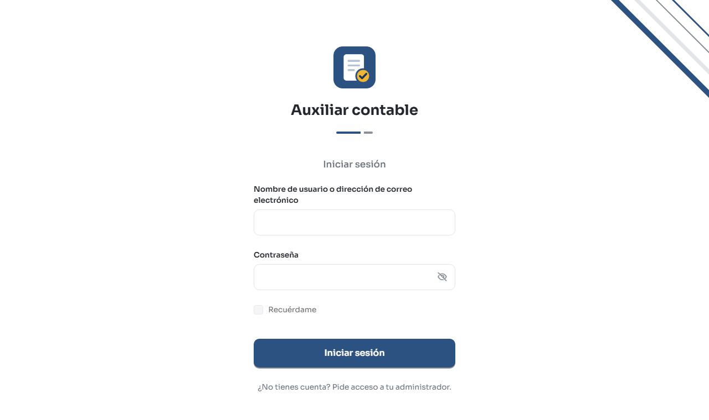
La primera vez
- Abre el enlace del correo «Tu invitación a Auxiliar contable». Vale 7 días y sirve una sola vez.
- Elige tu usuario y tu contraseña. Al hacerlo tu correo queda confirmado.
- Entra con tu usuario (o tu correo) y la contraseña que elegiste.
¿Te dieron la cuenta sin invitación? Entra con lo que te pasaron y cambia la contraseña en Seguridad.
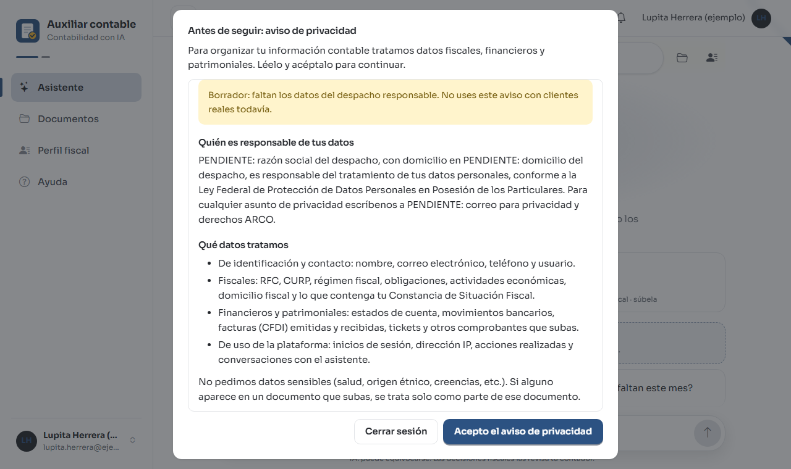
El aviso de privacidad
Antes de usar la consola hay que leer y aceptar el aviso de privacidad: explica qué datos fiscales se guardan, para qué y cómo se protegen. Pulsa «Acepto el aviso de privacidad» para continuar.
3. Usuario
Eres la persona del cliente: por ejemplo, Lupita, de «Panadería La Espiga». Platicas con el asistente, subes tus documentos y mantienes tu perfil fiscal al día. Solo ves lo de tu organización.
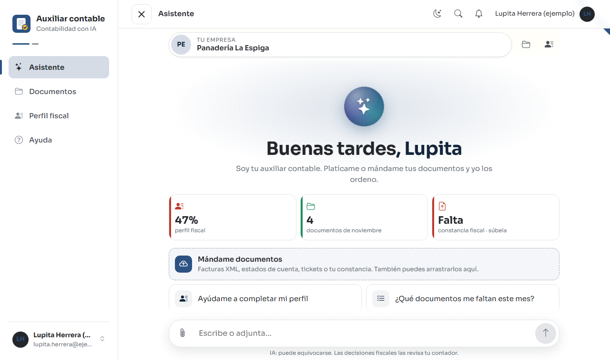
Platica con el asistente
- Al entrar te recibe el asistente: escríbele como a tu contador, «tengo una panadería», «¿qué me falta?».
- Con el clip (o arrastrando) le mandas facturas XML, estados de cuenta, tickets o tu constancia: los guarda en tus documentos.
- Arriba ves cómo vas (perfil, documentos del mes, constancia): toca una cifra para preguntarle por ella.
- Lo que le digas de tu negocio lo anota en tu perfil fiscal; abajo de su respuesta ves qué guardó.
Es orientación general hecha con IA y puede equivocarse: las decisiones fiscales las revisa tu contador.
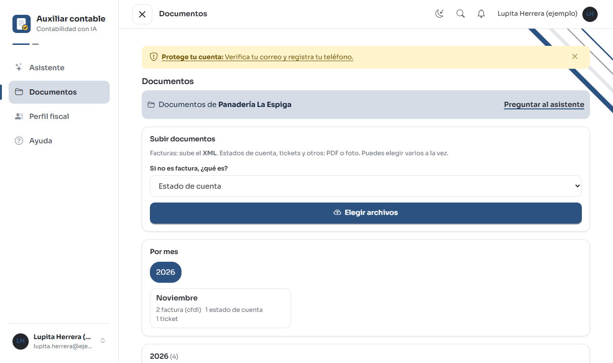
Sube tus facturas y estados de cuenta
- Toca «Elegir archivos». Puedes elegir varios a la vez.
- De tus facturas sube el XML.
- Estados de cuenta y tickets: PDF o foto. Antes elige qué son en «Si no es factura, ¿qué es?».
- Navega por año y mes, o busca por el nombre del archivo.
Si subes el mismo archivo dos veces no se duplica. Todo se guarda cifrado.
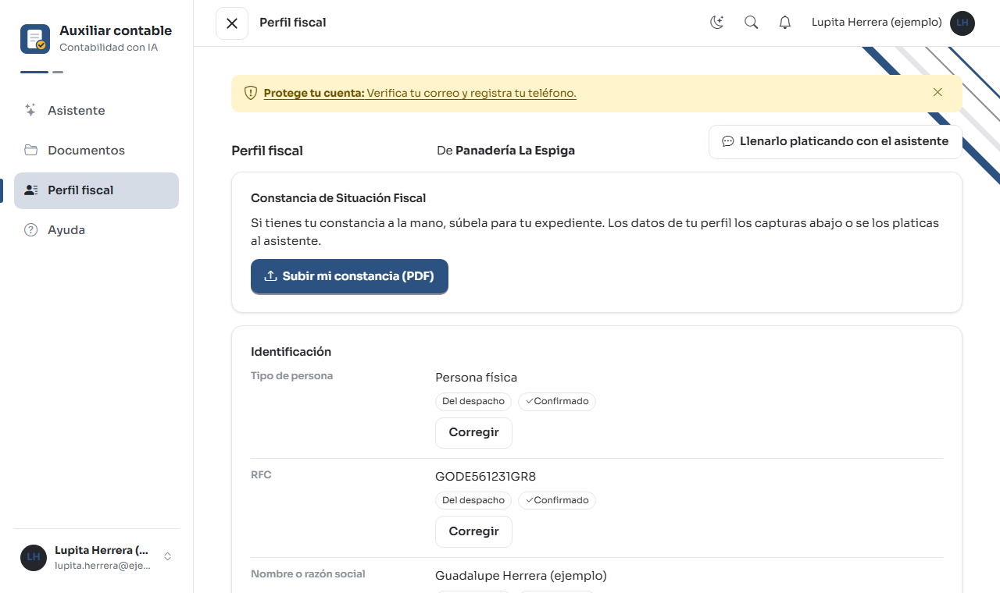
Llena tu perfil con tu constancia
- Descarga tu Constancia de Situación Fiscal (PDF) del portal del SAT, de los últimos 3 meses.
- Toca «Subir mi constancia»: queda guardada en tu expediente.
- Llena tus datos (RFC, régimen, domicilio) o platícaselos al asistente.
- Completa lo que la constancia no dice: a qué te dedicas, si facturas, tus bancos, si tienes trabajadores.
Nada se da por bueno hasta que lo confirmas. Cada dato dice de dónde salió: de tu constancia, de ti o del despacho.
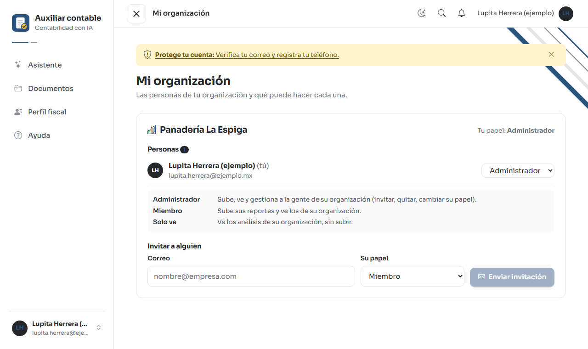
La gente de tu organización
Ves tu organización y tu papel en ella. Si eres su Administrador, desde aquí invitas a personas de tu empresa, cambias su papel o las quitas.
Una organización no puede quedarse sin administrador: nombra a otro antes de dejar de serlo.
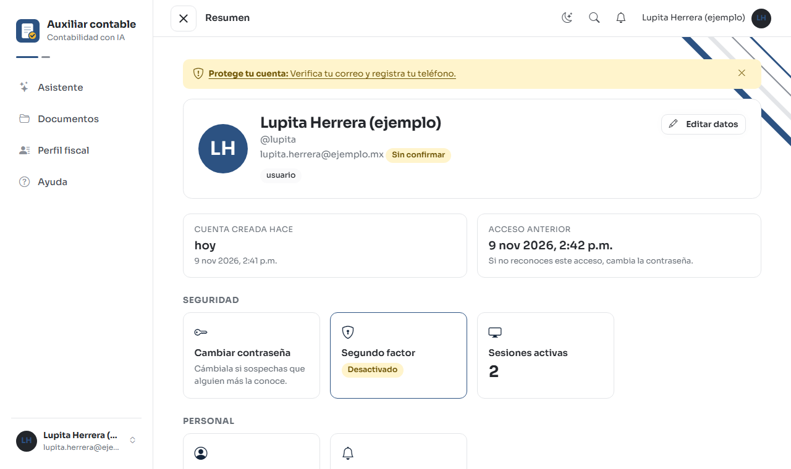
Tu cuenta
Desde el menú de tu nombre llegas a Mi cuenta: tus datos, tu seguridad, tu foto, tus sesiones y tus avisos. En Sesiones ves desde qué equipos has entrado y puedes cerrar las que no reconozcas.
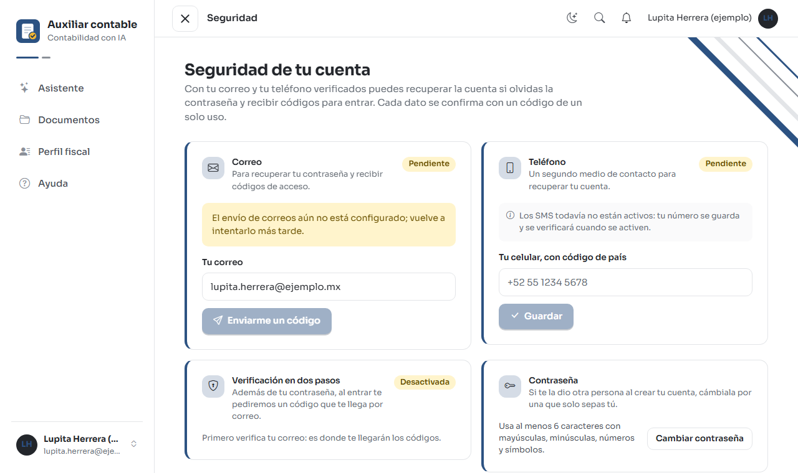
Protege tu cuenta
- Registra tu correo y escribe el código que te llega para verificarlo.
- Registra tu celular con código de país (por ejemplo +52 55 1234 5678).
- Activa la verificación en dos pasos: al entrar te pediremos además un código.
- Guarda los 10 códigos de recuperación: cada uno te deja entrar una vez si no te llega el código.
Nadie del despacho te va a pedir un código por teléfono ni mensaje. Si alguien lo hace, no se lo des.
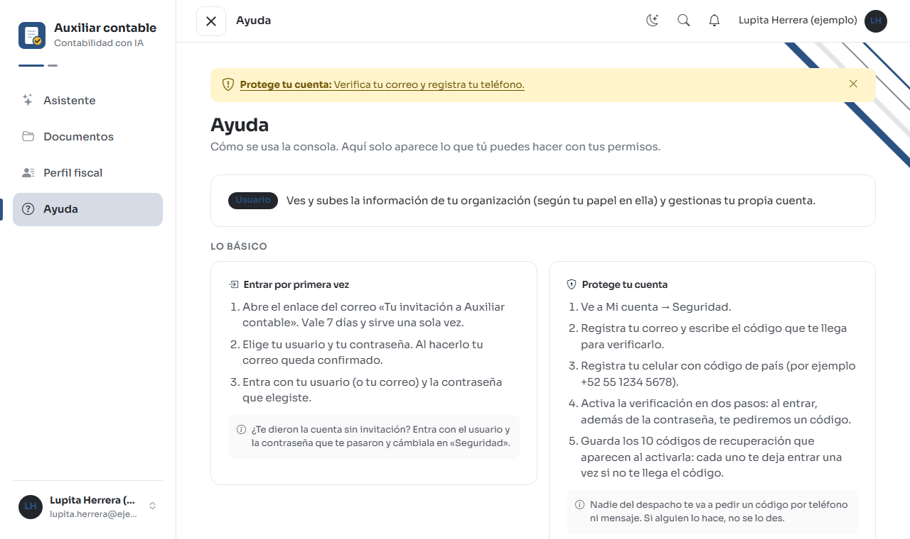
La ayuda dentro de la consola
La consola trae su propia ayuda, que muestra solo lo que tu rol puede hacer. Trucos: Ctrl + K (⌘ + K en Mac) abre el buscador de pantallas, y el botón del sol / la luna cambia entre modo claro y oscuro.
4. Administrador
Eres parte del equipo del despacho: por ejemplo, Jorge, el contador. Ves a todos los clientes sin pertenecer a ninguno, das de alta a sus personas y les das seguimiento mes a mes. Puedes hacer todo lo del Usuario, pero para cualquier cliente.
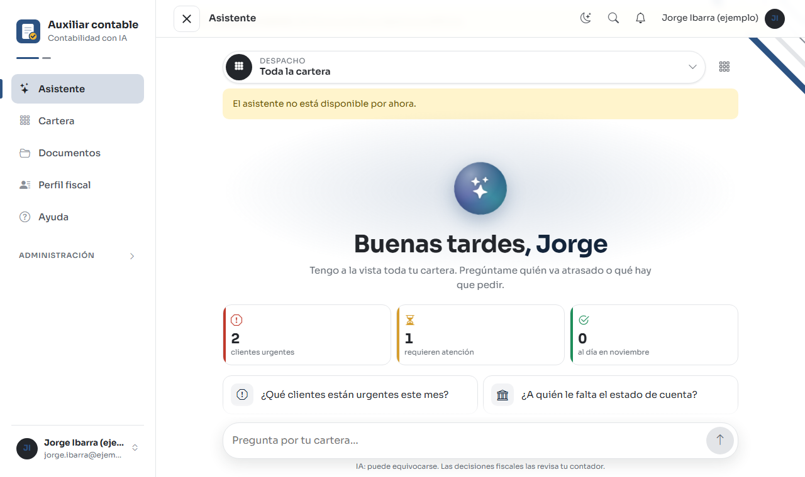
El asistente para el despacho
- Al entrar abre «Toda la cartera» con el semáforo del mes.
- Toca la pastilla de arriba para cambiar a un cliente: siempre está a la vista con quién estás platicando.
- Pídele un resumen del perfil, qué falta o un borrador de mensaje para el cliente (no lo envía: lo copias tú).
Lo que guarde a partir de lo que le digas queda como «Del despacho». Cada quien tiene su propia conversación.
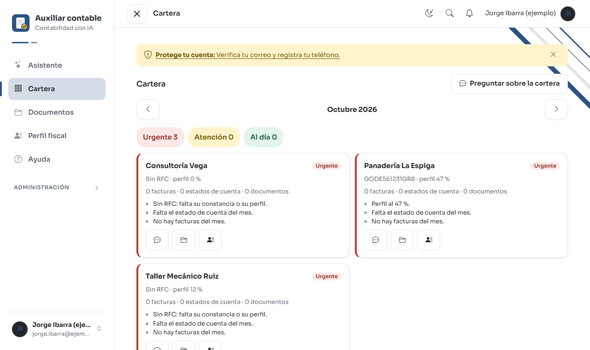
La cartera del despacho
Todos los clientes del mes con un semáforo: urgente (sin RFC o sin estado de cuenta del mes), atención o al día. Cada tarjeta dice qué falta y lleva directo a su asistente, documentos o perfil.
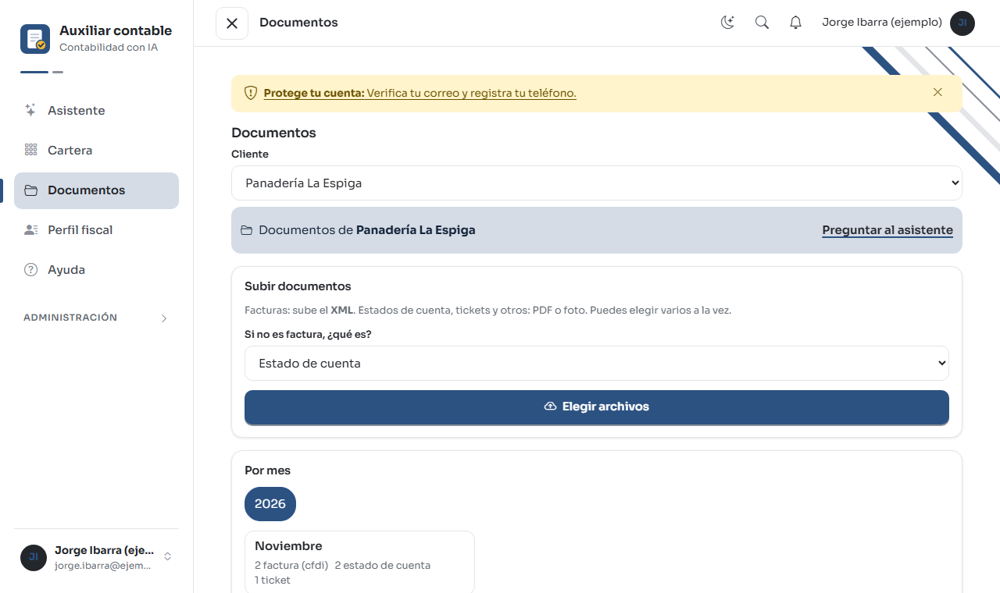
La bóveda de cada cliente
Elige al cliente arriba: ves sus documentos por mes y por tipo. Un mes sin facturas o sin estado de cuenta es lo que hay que pedirle. También puedes subir documentos por él.
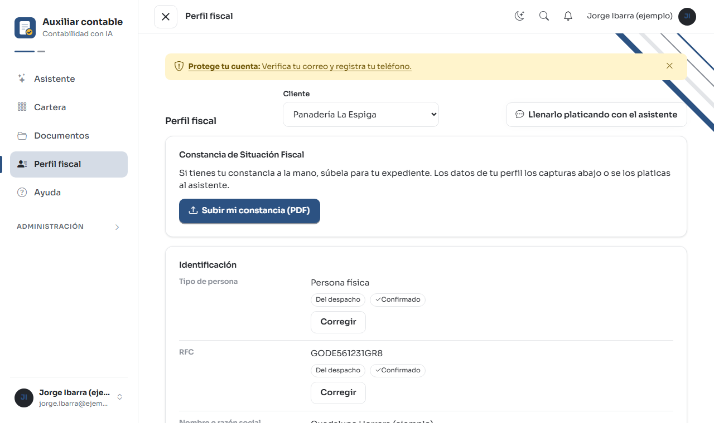
El perfil fiscal de cada cliente
Elige al cliente: ves su constancia, sus datos y de dónde salió cada uno. Puedes subir su constancia por él, confirmar datos y corregirlos; lo que captures queda como «Del despacho».
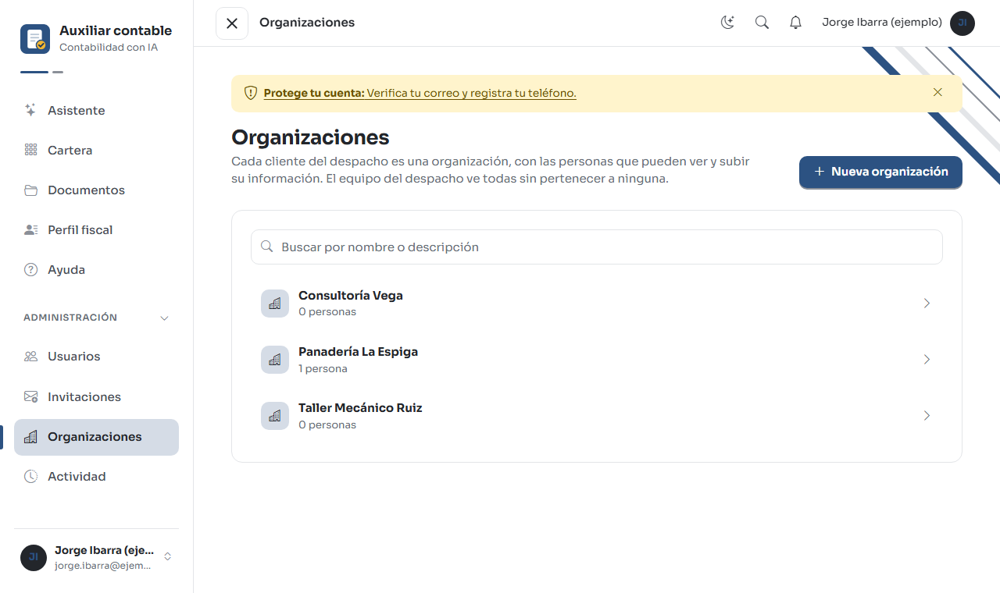
Dar acceso a un cliente
- Crea una organización con el nombre del cliente (persona física, empresa o grupo).
- Invita a la persona del cliente con el rol Usuario y elige su organización y su papel en la misma invitación.
- Nombra a una persona del cliente Administrador de su organización: desde «Mi organización» gestionará a su propia gente, sin depender de ti.
Una cuenta de cliente siempre se crea dentro de una organización. Quitar a alguien de la organización le corta el acceso al momento.
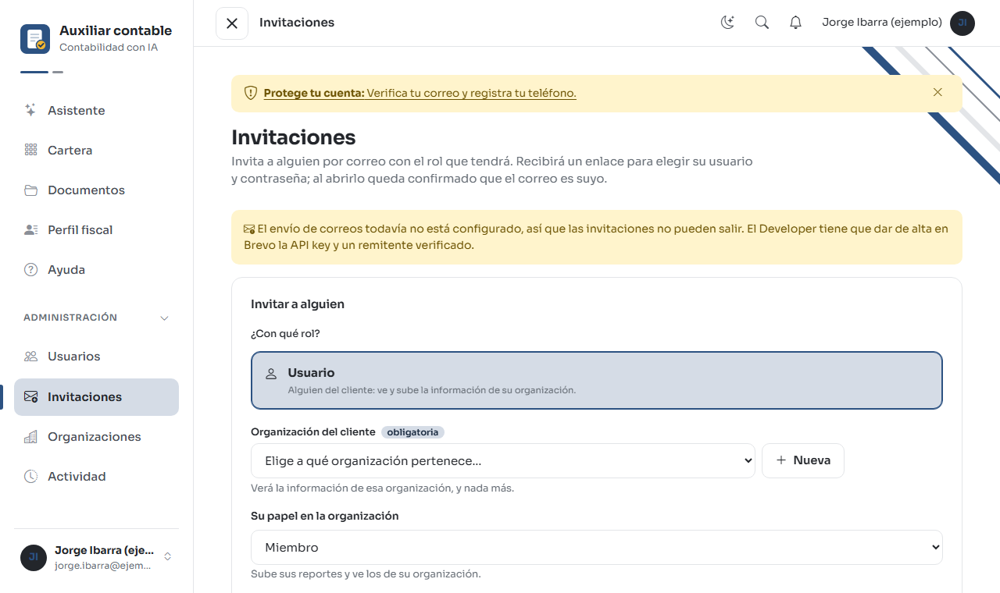
Invitar a alguien
- Elige el rol (solo aparecen los que están por debajo del tuyo) y escribe su correo.
- Pulsa «Enviar invitación». Le llega un enlace para crear su cuenta.
- Sigue el estado: Pendiente, Aceptada, Vencida o Revocada. «Reenviar» manda un enlace nuevo.
Invitar es mejor que crear la cuenta a mano: no inventas contraseñas y el correo queda verificado.
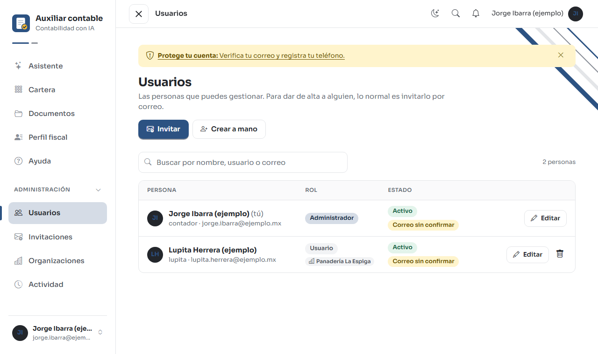
Gestionar usuarios
- Editas datos, rol y contraseña. Solo ves y tocas a quien está por debajo de ti.
- Para pausar el acceso sin perder su historial, desmarca «Activo» en vez de eliminar.
- Sin correo: «Crear a mano» → «Aún no tiene correo», con una contraseña temporal que le das en persona.
- Si no puede entrar: «Editar» → contraseña nueva, o en «Seguridad» → «Quitar verificación en dos pasos».
Confirma que es esa persona antes de quitarle la verificación en dos pasos: es justo lo que intentaría quien quiere robarle la cuenta. Queda registrado.
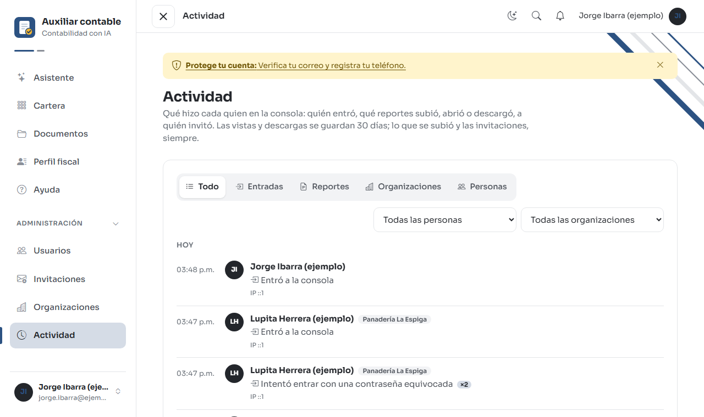
Ver quién hizo qué
Día por día, lo que hizo cada quien: quién entró, a quién invitó y qué cambió en las organizaciones. Filtra por persona, organización o tipo. Las acciones se guardan 30 días; las invitaciones aceptadas, siempre.
5. Owner
Eres la dueña del negocio: por ejemplo, Marta. Puedes hacer todo lo del Administrador y además gestionas a los Administradores, creas roles nuevos y defines la imagen de la consola.
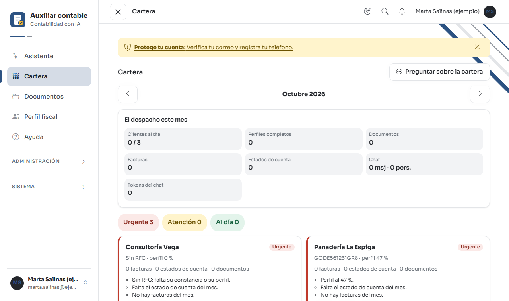
La cartera, con métricas
La misma cartera que ve el Administrador, y arriba el recuadro «El despacho este mes»: clientes al día, perfiles completos, documentos, facturas y estados de cuenta recibidos, y cuánto se usó el chat. Las flechas cambian de mes.
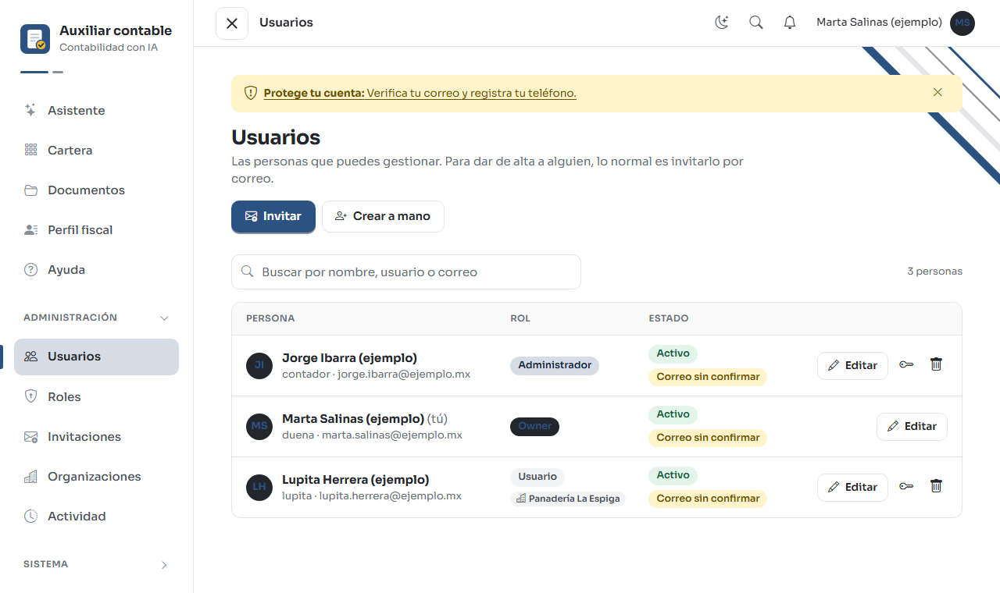
Tu equipo
Aquí aparecen también los Administradores (el equipo del despacho). Los das de alta, los editas o pausas igual que a los Usuarios. El botón de la llave da permisos a una sola persona, además de los de su rol: úsalo para excepciones.
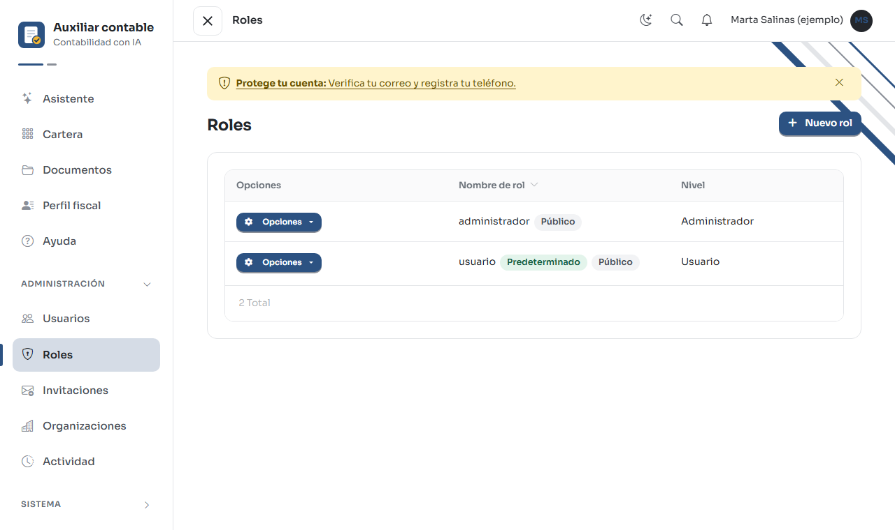
Roles y permisos
- Para un puesto nuevo (por ejemplo «Analista» o «Supervisor»), crea un rol y elige su nivel: Usuario no gestiona a nadie; Administrador gestiona a los Usuarios.
- En «Opciones → Permisos» marca qué puede hacer.
- Asígnalo al invitar o al editar a una persona.
Solo puedes crear roles de un nivel por debajo del tuyo y dar permisos que tú tienes. El nivel de los roles propios (Owner, Administrador, Usuario) no se cambia.
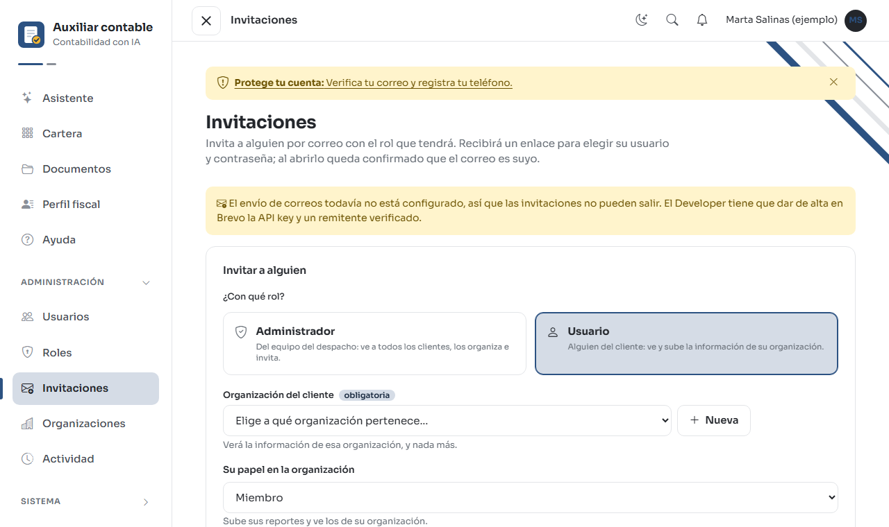
Invitar a un Administrador
Funciona igual que para el Administrador, pero tú puedes elegir también el rol Administrador para sumar a alguien al equipo del despacho.
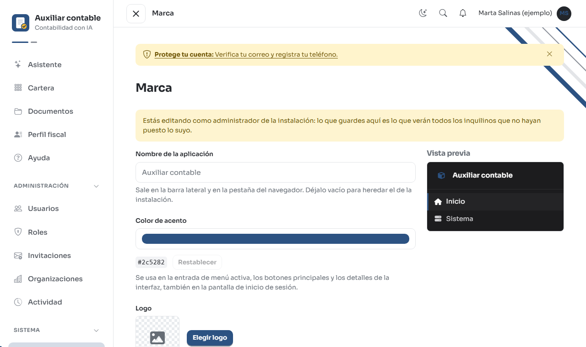
La marca
Subes el logo y eliges el color principal. Se aplica a toda la consola y a la pantalla de entrar.
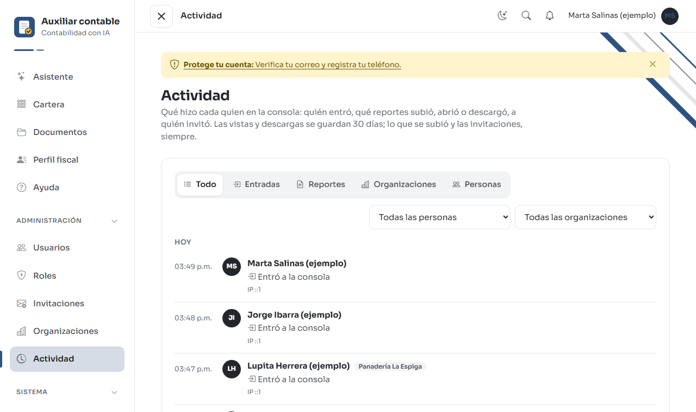
Actividad de todo el equipo
Ves la actividad de los Administradores y de los Usuarios. Es la forma de saber quién dio acceso a quién y cuándo.
6. Developer
Tiene todos los permisos y es invisible: su cuenta no aparece en ninguna lista, ni sus auditorías, invitaciones o roles, y las invitaciones que manda no llevan su nombre. Además de todo lo anterior ve el menú Sistema: Estado, Métricas, Auditoría, Alertas, Seguridad (IPs bloqueadas), Claves de API, Sesiones y Trabajos en segundo plano.
Cada pantalla de Sistema está explicada, con capturas, en el Manual de desarrollador (docs/manuales/manual-desarrollador.html), junto con cómo levantar, probar y desplegar la consola.
Si un correo no llega, mira Trabajos: el envío se reintenta solo y ahí queda el último error del proveedor de correo.
7. Si algo falla
| Qué pasa | Qué hacer |
|---|---|
| Olvidé mi contraseña | En la pantalla de entrar, «¿Olvidaste tu contraseña?» y escribe tu correo. Si no tienes correo verificado, pide a quien te dio de alta que te ponga una nueva. |
| No me llega el código de dos pasos | Usa uno de tus 10 códigos de recuperación. Si no los tienes, pide a tu Administrador (o al despacho) que quite la verificación; te van a confirmar que eres tú. |
| La invitación dice «vencida» | Vale 7 días. Pide que te la reenvíen: «Reenviar» manda un enlace nuevo. |
| No veo a un cliente o a una persona | Solo ves a quien está por debajo de tu rol, y como cliente solo ves tu organización. Si debería aparecer, revisa su rol y su organización con alguien de un nivel arriba. |
| Subí un archivo dos veces | No pasa nada: la consola detecta que es el mismo y no lo duplica. |
| El asistente anotó algo mal | Díselo en la plática o corrígelo en Perfil fiscal. Nada se da por bueno hasta que lo confirmas. |